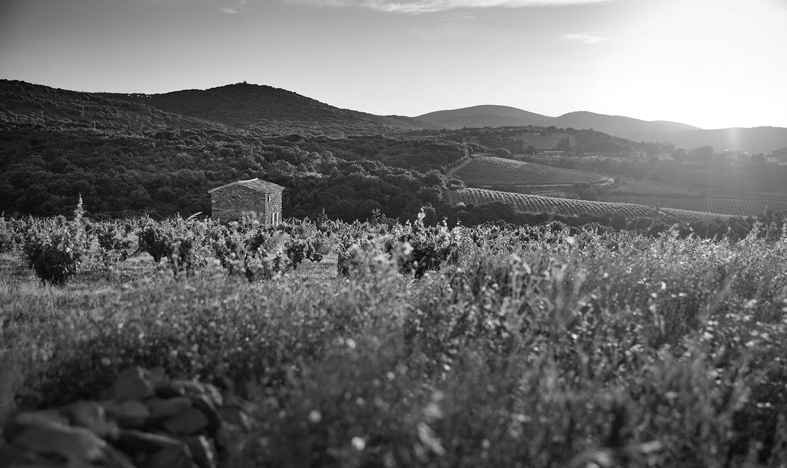

En la pintoresca ciudad Villa del Dique, Córdoba, Argentina, se encuentra la vinoteca Pasión y Vinos, un lugar donde la pasión por el vino se manifiesta en cada detalle. Sus fundadores, Daniel Alonso y Analía Etcheverry ingenieros agrónomos y músicos apasionados por los tintos, blancos y espumantes. Aunque también se dedica a componer música para películas, la administración de la vinoteca es su verdadera pasión.